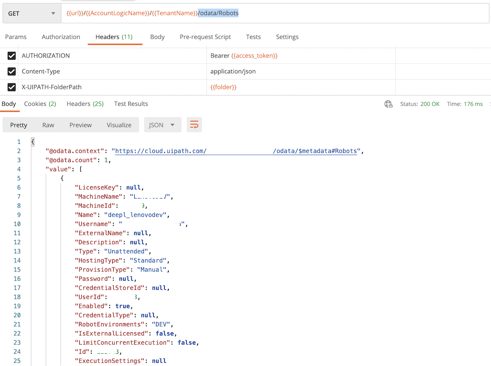
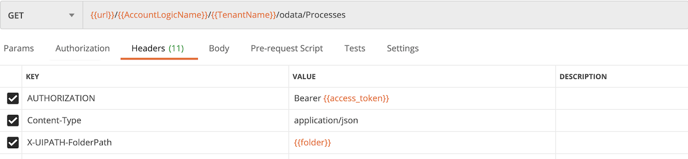
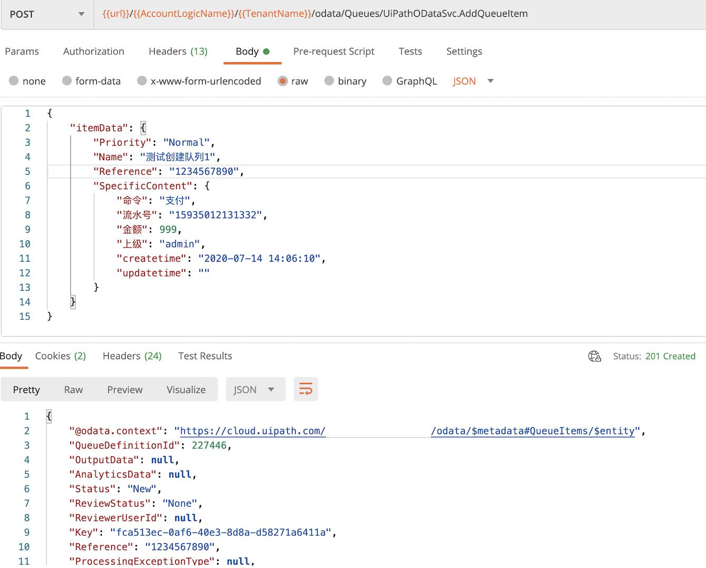
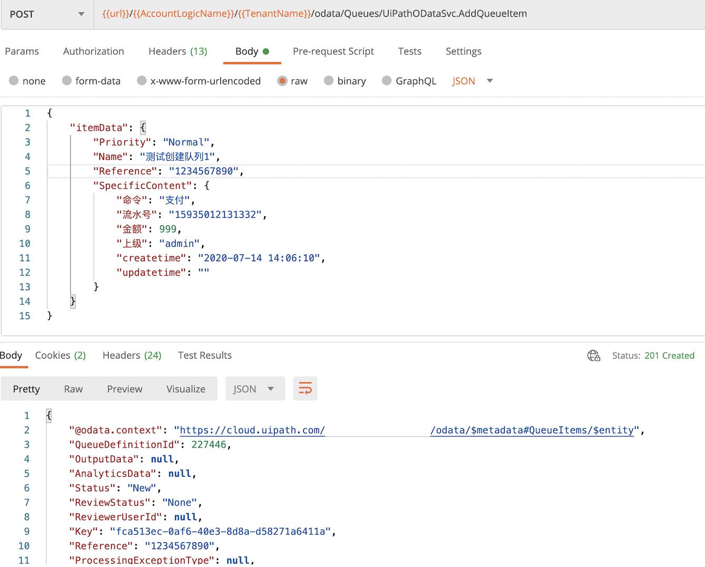

Python 调用 Uipath Orchestrator Cloud API 自动远程执行 job
在2019年9月之前，UiPath Cloud Orchestrator REST API的身份验证使用基本身份验证。但从2019年9月开始，UiPath Cloud Orchestrator REST API的身份验证已更改为OAuth。本文将使用postman解释调用步骤和操作，帮助读者理解操作过程，并且将为您部分python简单调用示范。
调用的范例使用 python 语言，读者也可以改成 php,go, c#, java, kotlin等语言。
基本概念
什么是API？
API是应用程序编程接口（Application Programming Interface）的首字母缩写，它是一种中介协议，允许两个应用程序相互通信。
API的示例？
当您安装和使用移动应用程序时，该移动应用程序将连接到Internet并将数据发送到服务器。然后，服务器检索该数据，对其进行解释，执行必要的操作，然后将其发送回手机。然后，应用程序将解释该数据，并以可读的方式为您提供所需的信息。这就是API，所有这些都是通过API进行的。
Orchestrator API的用途是什么？
Orchestrator API 可用于通过任何服务器、平板、手机的应用程序（甚至包括UiPath Studio /机器人）与Orchestrator进行交互。
通过API可以实现的基本功能是
- 开始/停止工作
- 检查机器人的状态
- 创建/修改资产
- 创建一个队列并将项目推入队列
- 检查作业状态
- 获取环境，流程，机器人，队列，作业详细信息等等…
到本文结尾您将学到什么？
您将能够:
- OAuth认证
- 从Orchestrator获取所有机器人数据
- 获取机器人的状态
- 从Orchestrator获取所有流程(Process)
- 从Orchestrator获取所有工作(Job)
- 从Orchestrator获取所有发行版(Release)
- 从Orchestrator开始作业(job)
- 停止Orchestrator的工作
- 从Orchestrator获取所有资产(Asset)
- 更新资产
- 创建队列(Queue)
- 添加队列元素(Item)
注意: 我们使用postman演示本文的调用步骤，并且给出对应的python调用示范
调用步骤
为了井井有条，我创建了一个json模板来存储安全信息。该JSON模板存储在一个文件名为settings.json。所有这些属性的含义，在阅读本文时，这一点将变得很清楚。
您的初始settings.json文件应类似于以下示例。
将本文中的json直接剪切并粘贴到记事本（Windows）或TextEdit（Mac）中，然后填写您的用户名和两个密码，然后保存文件。
1
2
3
4
5
6
7
8
9
10
11
12
13
14
15
16
17 | {
"OAuthUrl": "https://account.uipath.com/oauth/token",
"url": "https://cloud.uipath.com",
"AccountLogicName": "你的AccountLogicName",
"TenantName": "你的TenantName",
"DefaultFolder": "Default",
"UserKey": "你的UserKey",
"ClientId": "你的ClientId",
"access_token": "",
"id_token": "",
"scope": "",
"expires_in": "86400",
"token_type": "Bearer",
"init_time": "0",
"RobotId": "你的RobotId",
"ReleaseKey": "你的process的ReleaseKey"
}
|
步骤一 从 Orchestrator 账户中获取 UserKey等 API OAuth 参数
登录进入你的 Orchestrator 账户，进入以下界面，复制参数 UserKey, AccountLogicName, TenantName, ClientId。

步骤二 Authenticate 认证
此过程的最终目标是拥有有效的OAuth访问令牌。该令牌将作为GET和POST请求标头中的Bearer令牌传递到UiPath Cloud Orchestrator REST API。
注意!
发出REST API请求时，请在每个会话开始时使用"刷新令牌"获取新的访问令牌，然后使用它来发出一个或多个REST API请求。令牌的有效期为24小时，每次运行时，可以使用储存的旧令牌。
请注意，请尽量减少重复生成新令牌，否则云端服务器可能会对你的api限速。
注意!
为方便多个get/post, 我们把各变量储存在postman的环境变量里，调用变量时，postman的形式是 {{变量名}} , 例如 {{access_token}}, {{AccountLogicName}}, {{TenantName}}等等。
Request (Post 访问)
如图输入网址和相关参数，在Body里输入json, 值是ClientId和UserKey, 在Headers里输入键名 X-UIPATH-TenantName 和值 TenantName。
| {
"grant_type": "refresh_token",
"client_id": "你的 ClientId",
"refresh_token": "你的UserKey"
}
|
Response (200 OK)
返回结果包括access_token, id_token等参数，我们要在后续的api访问里使用。
Python 代码片段
1
2
3
4
5
6
7
8
9
10
11
12
13
14
15
16
17
18
19
20
21
22
23 | async def authToken(self):
"""OAuth 验证"""
headers = {'content-type': self.ContentType, 'X-UIPATH-TenantName': self.data["TenantName"]}
body_value = {"grant_type": self.GrantType,
"client_id": self.data["ClientId"],
"refresh_token": self.data["UserKey"]}
payload = json.JSONEncoder().encode(body_value)
try:
if check_expire(self.data["expires_in"], self.data["init_time"]):
ret = await self.postdata(url = self.data["OAuthUrl"], headers = headers, data = payload)
if ret is None:
print("请检查settings.json是否设置了api信息!")
os._exit(0)
else:
self.data["access_token"] = ret.get("access_token")
self.data["id_token"] = ret.get("id_token")
self.data["scope"] = ret.get("scope")
self.data["expires_in"] = ret.get("expires_in", 0)
self.data["token_type"] = ret.get("token_type")
self.data["init_time"] = int(time.time())
except Exception as err:
print("OAuth Error: {0}".format(err))
raise
|
步骤三 查询 Robot, Job, Process, Release信息
获取 License 信息
Get 访问endpoint: /odata/Settings/UiPath.Server.Configuration.OData.GetLicense
获取 Folder 信息
Get 访问endpoint: /odata/OrganizationUnits

返回结果DisplayName参数，我们在后续的api里使用
Python 代码片段
| async def getFolder(self):
"""获取 Folder 信息"""
headers = { "AUTHORIZATION": self.data["token_type"] + ' ' + self.data["access_token"],
'content-type': self.ContentType,
'X-UIPATH-TenantName': self.data["TenantName"]}
url = self._folder.format(self.data["url"], self.data["AccountLogicName"],self.data["TenantName"])
ret = await self.getdata(url, headers=headers)
return [ x for x in ret.get("value", [])]
|
获取所有的 Robots 信息
Get 访问endpoint: /odata/Robots
返回所有的 Robots 信息

Headers 参数 AUTHORIZATION, Content-Type,X-UIPATH-FolderPath
Python 代码片段
| async def getRobots(self):
"""获取全部 Robot 信息 """
headers = { "AUTHORIZATION": self.data["token_type"] + ' ' + self.data["access_token"],
'content-type': self.ContentType,
'X-UIPATH-FolderPath': self.data["DefaultFolder"]}
url = self._getRobots.format(self.data["url"], self.data["AccountLogicName"],self.data["TenantName"])
ret = await self.getdata(url, headers=headers)
return [ x for x in ret.get("value", [])]
|
获取指定的 Robot 状态
Get 访问endpoint: /odata/Sessions?$top=1&$filter=Robot/Id eq (这里放robot id) &$select=State

返回结果的可能状态包括: Available, Busy, Disconnected, Unresponsive， 我们在使用Robot执行作业时，需要先判断Robot是Available。
获取所有 Process 信息
Get 访问endpoint: /odata/Processes
返回所有的 Process 信息
@odata.count 是Process总数

获取所有作业 Jobs 信息
Get 访问endpoint: /odata/Jobs
返回所有的 Jobs 信息
@odata.count 是Jobs总数
获取所有 Releases信息
Get 访问endpoint: /odata/Releases
返回所有的 Release 信息
@odata.count 是Release总数
执行 Job, 定义队列，添加队列，访问/修改 Asset
执行作业 Job
Post 访问endpoint: /odata/Jobs/UiPath.Server.Configuration.OData.StartJobs


如图示，Body中需要添加如下的内容，具体参数含义，请参考UiPath Orchestrator 手册
| {
"startInfo": {
"ReleaseKey": "你的ReleaseId",
"Strategy": "All",
"RobotIds": []
}
}
|
返回结果是 (HTTP 201 Created)
1
2
3
4
5
6
7
8
9
10
11
12
13
14
15
16 | {
"@odata.context": "https://cloud.uipath.com/odata/$metadata#Jobs",
"value": [
{
"Key": "31ade17f-5a35-4250-beea-43922dc2a20d",
"StartTime": null,
"EndTime": null,
"State": "Pending",
"Source": "Manual",
"BatchExecutionKey": "cbaff1c6-32b0-468b-9ad9-b59f9ca1d3b6",
"Info": null,
"CreationTime": "2018-03-19T19:01:58.6806126Z",
"StartingScheduleId": null,
"Id": 128209
}]
}
|
停止作业 Job
Post 访问endpoint: /odata/Jobs/UiPath.Server.Configuration.OData.StopJobs
| {
"jobIds": [141888, 141889],
"strategy": "Kill"
}
|
返回结果 (HTTP 200)
200 OK
列出所有 Assets
Get 访问endpoint: /odata/Assets

创建 Asset
Post 访问endpoint: /odata/Assets
设置Body为：
| {
"Name": "测试参数2",
"ValueScope": "Global",
"ValueType": "Text",
"StringValue": "An asset added through an API call"
}
|

返回结果状态是 (HTTP 201), 返回内容如图示。
修改Asset
Put 访问endpoint: /odata/Assets(变量Id)

返回结果状态是 (HTTP 200)。
创建队列 Queue
Post 访问endpoint: /odata/QueueDefinitions

返回结果状态是 (HTTP 201 Created), 返回内容如图示。
添加队列元素
Post 访问endpoint: /odata/Queues/UiPathODataSvc.AddQueueItem
 

返回结果状态是 (HTTP 201 Created), 返回内容如图示。
如果进入Orchestrator的管理，队列管理界面，可以看到我们成功添加了新队列，队列元素。


好了，到此我们就初步用Postman演示了如何调用Orchestrator 的API接口，使用这些接口，你可以很方便的创建手机，服务器和平板上的应用来驱动UiPath Robot，远程调用Robot的方式可以有三种:
- 队列异步驱动(设置队列一添加新元素，Robot就立即执行，应用的例子例如收到新邮件，或者银行事务)
- 定时驱动(设置按时间和执行频率，运行Robot)
- 用 StartJob 直接调用 Robot
Python 代码文件
orchestrator.py
1
2
3
4
5
6
7
8
9
10
11
12
13
14
15
16
17
18
19
20
21
22
23
24
25
26
27
28
29
30
31
32
33
34
35
36
37
38
39
40
41
42
43
44
45
46
47
48
49
50
51
52
53
54
55
56
57
58
59
60
61
62
63
64
65
66
67
68
69
70
71
72
73
74
75
76
77
78
79
80
81
82
83
84
85
86
87
88
89
90
91
92
93
94
95
96
97
98
99
100
101
102
103
104
105
106
107
108
109
110
111
112
113
114
115
116
117
118 | # -*- coding: utf-8 -*-
"""This module holds class orchestrator of UiPath
"""
import asyncio
import aiohttp
import json
import time
import os
check_expire = lambda expires_in,init_time: int(time.time()) > int(expires_in) + int(init_time) - 3600
class orchestrator():
def __init__(self, data):
"""初始化 Orchestrator 对象"""
self.data = data
self.ContentType = 'application/json'
self.GrantType = 'refresh_token'
self._folder = '{0}/{1}/{2}/odata/OrganizationUnits'
self._getRobots = '{0}/{1}/{2}/odata/Robots'
self._addQueue = '{0}/{1}/{2}/odata/Queues/UiPathODataSvc.AddQueueItem'
self._addQueueBulk = '{0}/{1}/{2}/odata/Queues/UiPathODataSvc.BulkAddQueueItems'
self._getRobotStatus = '{0}/odata/Sessions?$top=1&$filter=Robot/Id eq {1}&$select=State'
self._StartJob = '{0}/odata/Jobs/UiPath.Server.Configuration.OData.StartJobs'
@staticmethod
async def postdata(url = None,headers = None, data = None):
ret = None
try:
async with aiohttp.ClientSession() as session:
async with session.post(url,headers=headers,data = data, timeout=300, ssl=False) as r: #verify_ssl=False
if (r.status == 200) or (r.status == 201):
try:
ret = await r.json()
except Exception as err:
print("post url {0} Exception error: {1}".format(url, err))
raise
else:
print("Post失败，code= %d %s" % (r.status, await r.text()))
except aiohttp.ClientError as err:
print("post url {0} error {1}".format(url,err))
raise
return ret
@staticmethod
async def getdata(url = None,headers = None, params = None):
ret = None
try:
async with aiohttp.ClientSession(headers=headers) as session:
async with session.get(url,params=params,timeout=300,ssl=False) as r: #verify_ssl=False
assert r.status == 200, r.status
#401 Unauthorized raise AssertionError
ret = await r.json()
except aiohttp.ClientError as err:
#traceback.print_exc()
print("Get url {0} error {1}".format(url, err))
raise
return ret
@staticmethod
async def putdata(url = None,headers = None, data = None):
ret = None
try:
async with aiohttp.ClientSession() as session:
async with session.put(url,headers=headers,data = data, timeout=300, ssl=False) as r: #verify_ssl=False
if (r.status == 200) or (r.status == 201):
try:
ret = await r.json()
except Exception as err:
print("put url {0} Exception error: {1}".format(url, err))
raise
else:
print("Put失败，code= %d %s" % (r.status, await r.text()))
except aiohttp.ClientError as err:
print("put url {0} error {1}".format(url,err))
raise
return ret
async def authToken(self):
"""OAuth 验证"""
headers = {'content-type': self.ContentType, 'X-UIPATH-TenantName': self.data["TenantName"]}
body_value = {"grant_type": self.GrantType,
"client_id": self.data["ClientId"],
"refresh_token": self.data["UserKey"]}
payload = json.JSONEncoder().encode(body_value)
try:
if check_expire(self.data["expires_in"], self.data["init_time"]):
ret = await self.postdata(url = self.data["OAuthUrl"], headers = headers, data = payload)
if ret is None:
print("请检查settings.json是否设置了api信息!")
os._exit(0)
else:
self.data["access_token"] = ret.get("access_token")
self.data["id_token"] = ret.get("id_token")
self.data["scope"] = ret.get("scope")
self.data["expires_in"] = ret.get("expires_in", 0)
self.data["token_type"] = ret.get("token_type")
self.data["init_time"] = int(time.time())
except Exception as err:
print("OAuth Error: {0}".format(err))
raise
async def getFolder(self):
"""获取 Folder 信息"""
headers = { "AUTHORIZATION": self.data["token_type"] + ' ' + self.data["access_token"],
'content-type': self.ContentType,
'X-UIPATH-TenantName': self.data["TenantName"]}
url = self._folder.format(self.data["url"], self.data["AccountLogicName"],self.data["TenantName"])
ret = await self.getdata(url, headers=headers)
return [ x for x in ret.get("value", [])]
async def getRobots(self):
"""获取全部 Robot 信息 """
headers = { "AUTHORIZATION": self.data["token_type"] + ' ' + self.data["access_token"],
'content-type': self.ContentType,
'X-UIPATH-FolderPath': self.data["DefaultFolder"]}
url = self._getRobots.format(self.data["url"], self.data["AccountLogicName"],self.data["TenantName"])
ret = await self.getdata(url, headers=headers)
return [ x for x in ret.get("value", [])]
|
test_UiPathOC.py
1
2
3
4
5
6
7
8
9
10
11
12
13
14
15
16
17
18
19
20
21
22
23
24
25
26
27
28
29
30
31
32
33
34
35
36
37
38
39
40
41
42
43
44
45
46
47
48
49
50
51
52
53
54
55
56
57
58
59
60
61
62
63
64
65
66
67
68
69
70
71 | # -*- coding: utf-8 -*-
"""
单元测试组，测试 UiPath Orchestrator API的部分接口，提供调用API演示
"""
import unittest
import time
import asyncio
import json
from orchestrator import orchestrator
SETTINGS_FILE = "settings.json"
def print_test(method):
"""
输出测试单元，打印单元耗时，测试单元名和测试结果
"""
def run(*args, **kw):
ts = time.time()
print('\t测试单元 %r' % method.__qualname__)
method(*args, **kw)
te = time.time()
print('\t[测试通过] 耗时 %r %2.2f 秒' % (method.__qualname__, te - ts))
return run
def save_settings(data):
"""保存 settings.json"""
# 写入 JSON 数据
with open(SETTINGS_FILE, 'w') as f:
json.dump(data, f)
class OrchestratorTestCase(unittest.TestCase):
"""测试 Orchestrator API"""
def setUp(self):
"""执行单元测试前先执行"""
# 读取 settings.json 数据
with open(SETTINGS_FILE, 'r') as f:
data = json.load(f)
self.oc = orchestrator(data)
coroutine = self.oc.authToken()
loop = asyncio.get_event_loop()
loop.run_until_complete(coroutine)
@print_test
def test_01_getFolder(self):
coroutine = self.oc.getFolder()
loop = asyncio.get_event_loop()
task = asyncio.ensure_future(coroutine)
loop.run_until_complete(task)
folders = task.result()
self.assertTrue(isinstance(folders, list) and len(folders)>0)
output = []
for folder in folders:
output.append((folder["DisplayName"],folder["Id"]))
print("\t 你的 Folder: ", output)
@print_test
def test_02_getRobots(self):
coroutine = self.oc.getRobots()
loop = asyncio.get_event_loop()
task = asyncio.ensure_future(coroutine)
loop.run_until_complete(task)
robots = task.result()
self.assertTrue(isinstance(robots, list) and len(robots)>0)
output = []
for robot in robots:
output.append((robot["Name"],robot["Id"],robot["Type"]))
print("\t 你的 Robots: ", output)
if __name__ == '__main__':
#执行单元测试
unittest.main(verbosity=0)
|
把如上的三个文件，settings.json, orchestrator.py, test_UiPathOC.py 放在同一目录，按步骤一从oc账户获取 API access 的参数填入 settings.json。在 cmd 窗口下, 输入：
| pip install asyncio
pip install aiohttp
pip install unittest
|
输入以下单元测试的命令，
结果：

总结： 通过在应用系统中远程异步调用Orchestrator API接口，可以实现手机、平板、服务器多平台应用驱动多个 UiPath Robot 并发处理任务，扩展了应用宽度和灵活性。